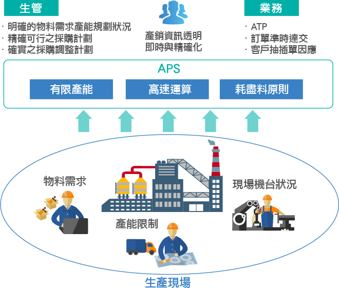

困擾與痛點
受新型冠狀病毒(2019-nCoV)疫情影響，導致全球供應鏈斷鏈的風險逐漸提高外，
終端需求兩極化導致不同產業訂單變動挑戰愈趨嚴峻。
在大環境不確定的情勢下，您的企業是否也面臨著經營的不確定性，
還有工廠訂單緊急變動、物料缺貨、交期緊張的困境…
受新型冠狀病毒(2019-nCoV)疫情影響，導致全球供應鏈斷鏈的風險逐漸提高外，終端需求兩極化導致不同產業訂單變動挑戰愈趨嚴峻。
在大環境不確定的情勢下，您的企業是否也面臨著經營的不確定性，
還有工廠訂單緊急變動、物料缺貨、交期緊張的困境…
-
- 產線大亂
- 訂單不知道能不能準時交出來
- 如果違約!後續還接不接的到訂單阿…
- 接單不穩定，營收會不會被影響…
-
- 明明答應客戶的交期， 卻又延誤造成客訴，影響後續接單...
- 少量多樣又短交期,真是要人命
-
- 遇到緊急抽插單時，原來計畫已排好了，要如何重排影響最小？
- 排程都是用人工排，要考慮的條件多、現場狀況又多變，造成排程與現場生產對不上...
- 少量多樣怎麼安排生產?
- 生產進度與物料進貨時程無法掌控，導致停工待料
-
- 計畫永遠趕不上變化，只好靠經驗決定該加工什麼任務...
-
- 生管又通知停工待料了，到底該怎樣安排進料時程,才能滿足工單齊料？
交期永遠不準、急單馬上又要給交期，該怎麼辦？
快速反應緊急訂單、產銷協作順暢，APS系統能幫您做到！
-
Before
改善前 -
After
改善後
-
Before
改善前 -
After
改善後
APS系統特色
APS提供企業整體供需規劃及不同層次的生產規劃與排程方案，針對多元的離散型行業，滿足顧客訂單與充分的利用企業的有限資源，APS改善了傳統MRP運算邏輯的不足，提供與ERP與MES集成，為企業運維的降本提效，提供最佳的一體性方案。
-
整體規劃
降低運維成本- 同步規劃，解決採購/物管/生管供需安排問題。
- 並同時集成ERP與MES數據，達成企業運維與製造現場的一體化。
- 企業經營運維降本與提效。
-
重點提效
增進營運績效- 針對離散型產業中，不同行業別、製程複雜、設備成本高昂
- 為考慮資源限制下的規劃
- 有效提昇設備稼動率
- 低存貨水準及達成企業營運高效目標
-
智能模擬
加速提昇決策品質- 因應日異多變的市場波動，針對需求變動(抽/插單)，予以快速因應客戶的詢單要求。
- APS快速反應詢單預計交期。
- 提供即時性規劃、增進企業支援決策能力。
APS系統在工廠營運管理(MOM)不可取代的地位
排程可視化與快速分析
資料索取與諮詢
資料提交中，請稍後